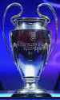

• Único jugador en la historia que en una misma temporada gana Balón de Oro, FIFA World Player, Trofeo Pichichi y Bota de Oro. Sucedió la temporada 2009/10
• Jugador con más Balones de Oro. Ha ganado siete. Fue en los años 2009, 2010, 2011, 2012, 2015, 2019 y 2021
• Jugador más joven en conseguir tres Balones de Oro. Tenía 24 años, 6 meses y 17 días cuando ganó el tercero el 9 de enero de 2012
• Jugador con más Botas de Oro. Ha ganado seis. Fue en las temporadas 2009-10, 2011-12, 2012-13, 2016-17, 2017-18 y 2018-19.
• Máximo goleador en una temporada en competiciones oficiales. Marcó 73 goles en la 2011/12 (50 en la Liga, 14 en la Champions, 3 en la Copa, 3 en la Supercopa de España, 1 en la Supercopa de Europa y 2 en el Mundial de Clubs).
• Máximo goleador absoluto en un año natural. Marcó 91 goles oficiales en 2012. Con el Barça 84 (59 en la Liga, 13 en la Champions, 5 en la Copa del Rey y 2 en la Supercopa) y con la selección argentina 12. Además, anotó otros 5 en amistosos con el Barça, que elevan la cifra hasta un total de 96 goles.
• Récord de goles internacionales en un año. Marcó 25 goles el año 2012 (13 en la Champions y 12 con la selección argentina), y comparte récord con Vivian John Woodward, que hizo 25 en 1909.
• Máximo goleador en un mismo Club. Sumó 670 goles, superando los 643 goles que hizo Pelé con el Santos entre 1956 y 1974.
•Champions League: 4 (2005/06; 2008/09; 2010/11; 2014/15) 
•La Liga: 10 (2004/05 · 2005/06; 2008/09 · 2009/10; 2010/11; 2012/13; 2014/15;2015/16; 2017/18; 2018/19)
•Copa del Rey: 7 (2008/09; 2011/12; 2014/15; 2015/16; 2016/17; 2017/18; 2020/21).
•Mundial de Clubes: 3 (2009; 2011; 2015).
•Supercopa de Europa: 3 (2009/10; 2011/12; 2015/16).
•Supercopa de España: 8 (2005/06 · 2006/07; 2009/10; 2010/11; 2011/12; 2013/14; 2016/17; 2018/19)
•Ligue 1 2021/2022
•Super Copa de Francia 2022
•Finalissima 2022
•Copa América 2021
•Juegos Olimpicos 2008
•Mundial 2005